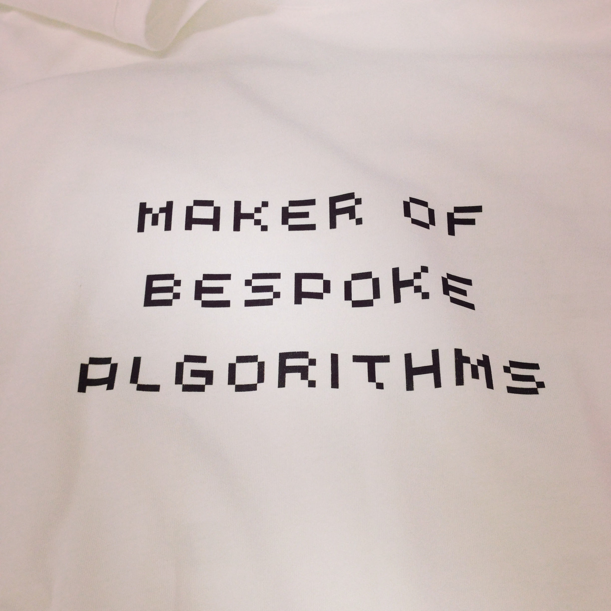
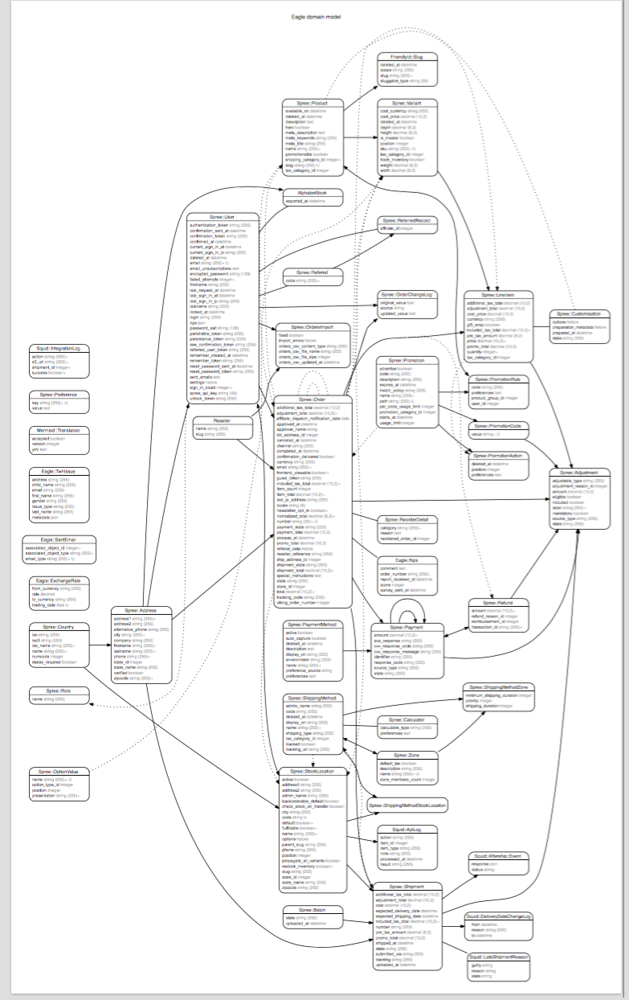

class: center, middle ## Global shipping of _on-demand_ products in **Solidus** ??? Introduction: I'm Alex, backend developer at Lostmy.name, where I have been working for the past _almost_ 3 years. _short pause_ Today I'll be going through some of the fun, and experimentation, we had with Solidus trying to set it up for our particular use case: **delivering magical, personalised products to our customers all around the globe.** _pause_ --- class: center, middle </img> <br> </img> ??? I have worked with (Spree) ... Solidus for the same amount of time as I have been at Lostmy.name. We have quite a specific set of requirements and we are constantly pushing Solidus to do more things! --- class: center </img> --- class: center, middle  </img> ??? When we started we were 3 engineers and neither of us had very much e-commerce experience, so being able to have a base project to work from made a big difference. _The tshirts are a running joke of when our CEO was on TV and was asked how our books are created and said that: "we have a bespoke algorithm"._ We had a previous website, that had very basic concepts of ecommerce: `Order` `Book` `Payment`. Then we moved to solidus. --- class: center # Enter Solidus  </img> ??? We went from a simple website to a very intricate, feature-rich e-commerce engine. We had **no idea** what we subscribed to!! We obviously wanted a system that would scale, but going from 4 models to two dozen was a **very** big chance. We were not ready to start thinking about `line items` `inventory units` `shipping rates` `stock items`. We wanted to sell personalised childrens books. --- ``` files.each do |file| puts file end ``` # Agenda 1. Introduction 2. Deep-dive 3. ... [NOTE]: Note that you need remark.js alongside this html file, but no internet connection. --- # Introduction